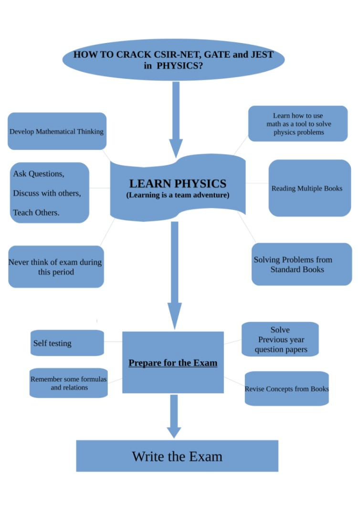

GRE Physics
Syllabus and reference books:
CLASSICAL MECHANICS — 20%
such as kinematics, Newton’s laws, work and energy, oscillatory motion, rotational motion about a fixed axis, dynamics of systems of particles, central forces and celestial mechanics, three-dimensional particle dynamics, Lagrangian and Hamiltonian formalism, noninertial reference frames, elementary topics in fluid dynamics
References:Classical Mechanics by John Taylor, Kleppner, Goldstein,
Check Classical Mechanics playlist for some videos on Lagrangian and Hamiltonian Formalism.
- ELECTROMAGNETISM — 18%
(such as electrostatics, currents and DC circuits, magnetic fields in free space, Lorentz force, induction, Maxwell’s equations and their applications, electromagnetic waves, AC circuits, magnetic and electric fields in matter)
References: Introduction to Electrodynamics by Griffiths
Check Electrodynamics playlist for some videos on Electrodynamics Griffiths concepts and problem solving sessions.
- OPTICS AND WAVE PHENOMENA — 9%
(such as wave properties, superposition, interference, diffraction, geometrical optics, polarization, Doppler effect)
References: Optics by Eugene Hetch or Schaum Series(by the same author)
- THERMODYNAMICS AND STATISTICAL MECHANICS — 10%
(such as the laws of thermodynamics, thermodynamic processes, equations of state, ideal gases, kinetic theory, ensembles, statistical concepts and calculation of thermodynamic quantities, thermal expansion and heat transfer)
References: Thermal Physics by Schroeder, Heat and Thermodynamics by Zemansky, F. Reif etc.
- QUANTUM MECHANICS — 12%
(such as fundamental concepts, solutions of the Schrödinger equation (including square wells, harmonic oscillators, and hydrogenic atoms), spin, angular momentum, wave function symmetry, elementary perturbation theory)
References: Griffiths, Zettili,
Check Quantum Mechanics playlist for some videos on Quantum Mechanics Griffiths concepts and problem solving sessions.
- ATOMIC PHYSICS — 10%
(such as properties of electrons, Bohr model, energy quantization, atomic structure, atomic spectra, selection rules, black-body radiation, x-rays, atoms in electric and magnetic fields)
References: Beiser, H E White, Bransden
- SPECIAL RELATIVITY — 6%
(such as introductory concepts, time dilation, length contraction, simultaneity, energy and momentum, four-vectors and Lorentz transformation, velocity addition)
References: Griffiths Electrodynamics, Kleppner and Kolenkow
- SPECIALIZED TOPICS — 9%
Nuclear and Particle physics (e.g., nuclear properties, radioactive decay, fission and fusion, reactions, fundamental properties of elementary particles): Beiser
Condensed Matter (e.g., crystal structure, x-ray diffraction, thermal properties, electron theory of metals, semiconductors, superconductors): Charles Kittel, F. Reif, Archtrof
Miscellaneous (e.g., astrophysics, mathematical methods, computer applications)